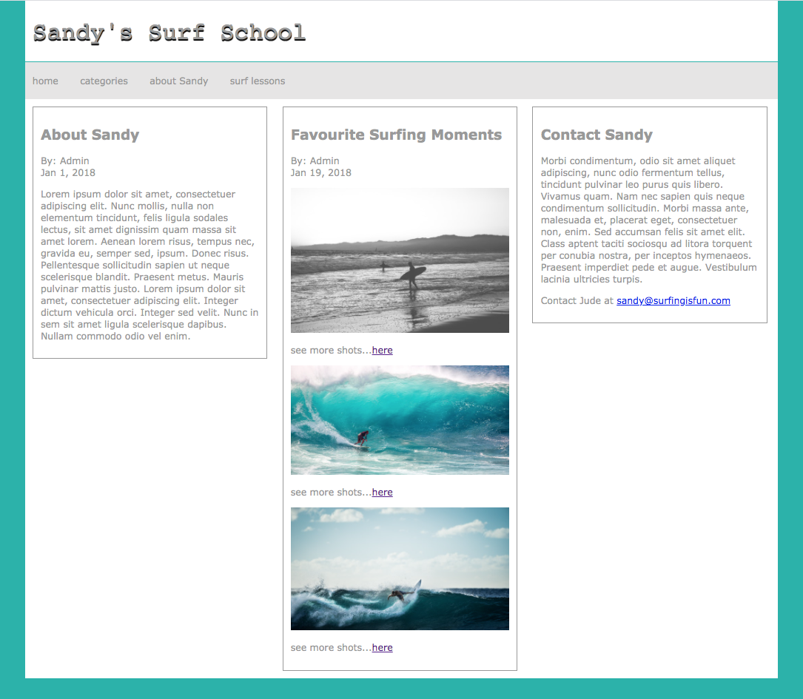

INFO 1217 LAB 2
|
Open the index.html and about.html files provided. Create an external css file (main.css) to recreate the layout below. Use flex to create the three columns. Add the link to the main.css in each html page. You should only have one css file for both pages. |
| Finish coding the Favourite Surfing Moments section on the about page. I have provided the images (fav1.jpg, fav2.jpg and fav3.jpg). The "here" link for each shot can be a dummy link. |
| In the nav, add a link to the about Sandy page on the index.html file and add a link to the index page on the about.html page. Add a link to your email address in the Contact Sandy column on the about page. Change all the Sandy's to your own name. |
| The index and about pages were coded using html5 elements. Remember to account for older browsers that render these new elements as inline at the top of the css file. I have already included the link to the script for older versions of IE. |
index page finished
about page finished

When you are finished, zip your entire folder and upload to the Lab 2 dropbox with the folder name format of LastName, FirstName-Lab2.
- correctly adding a link to your email, links to the home and about pages and changing all the Sandy's to your name
- adding link to css in the html pages
- accounting for older browsers and new html5 elements in the css
- centred layout with wrap div - set a width of 90%, body background color is set to light seagreen
- header h1 element left aligned, bold removed and color (#999) with a text-shadow
- formatting of the nav element and links, the color for the links is #999, nav background is #e6e5e5
- 3 column layout using flex
- fonts (Verdana for the links, content and h2's, Monospace for the h1, sizes can be approximate)
- formatting of each section (links, content text, images, fonts, color, border)
- h2 formatting in each column including spacing, alignment and color (#999), etc.
- no errors in css file